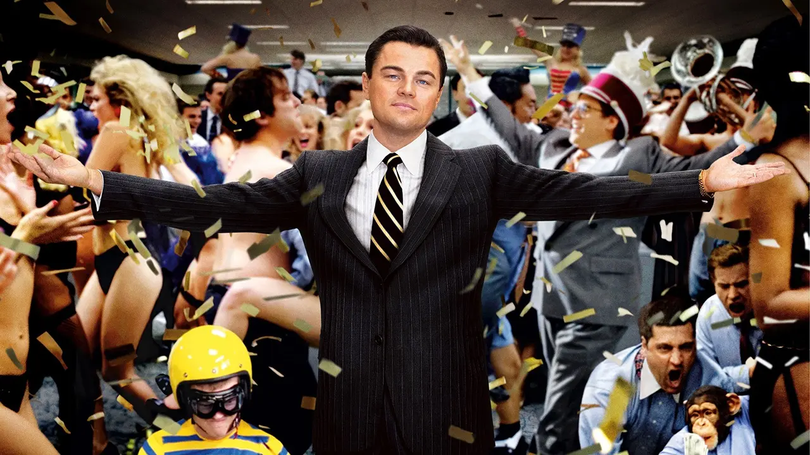
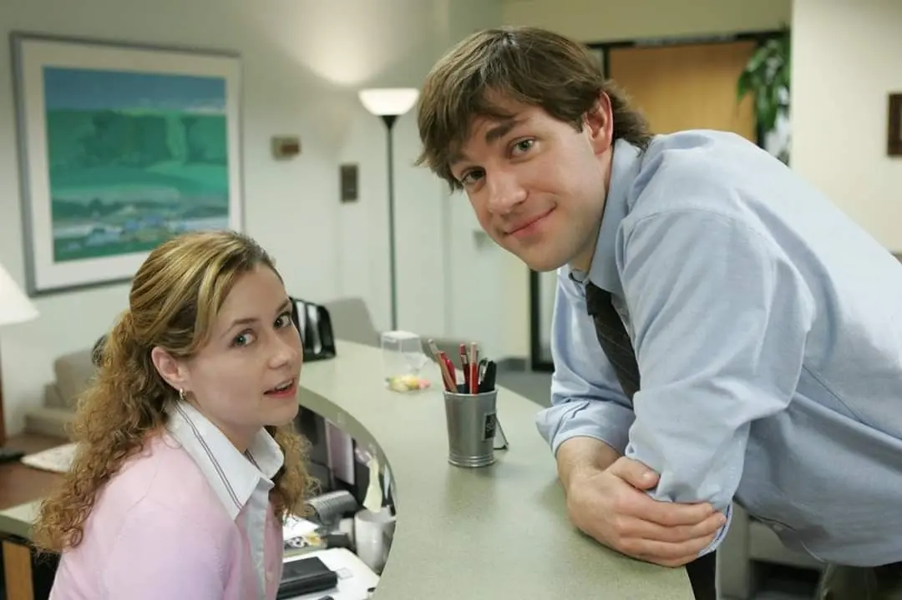
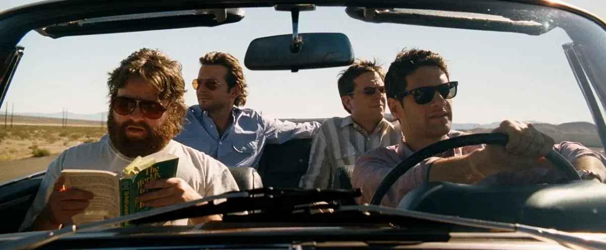

🎬 Интервью со студентом-юристом Николаем: Сессия как «Мальчишник в Вегасе», ритуалы перед сном и почему до сих пор бомбит от финала легендарного ситкома
В новом выпуске КиноГида мы поговорили с Николаем, будущим юристом, который спасается от тяжелой учебы американской классикой комедий и превращает каждый поход в кинотеатр в настоящий ритуал.

📽 КГ: Николай, скажи, пожалуйста, как часто ты смотришь кино?
Учеба на юридическом - дело непростое. Но выходные провести в кинотеатре - дело отличное, только бы выходные были. А вот сериалы - ритуал перед сном. Они не требуют 100% внимания.
📽️ КГ: Какой жанр спасает тебя после тяжелого дня?
Ситкомы или старые американские комедии. Я их обожаю. Юмор мне близкий, и самое главное - там почти нет эмоциональной нагрузки. А перед сном это критически важно.
📽️ КГ: Есть фильм, который ты пересматриваешь с удовольствием?
«Волк с Уолл-стрит». Друзьям особо не посоветуешь, но себя не могу остановить. Меня цепляет история человека, который добился всего, а потом разом все потерял из-за собственной высокомерности.

Кадр из фильма «Волк с Уолл-стрит»📽️ КГ: Был ли фильм, который изменил твое мировоззрение?
Честно? Нет. Я не из тех, кто после кино просыпается другим человеком. Мне кажется, это вообще редко случается, просто все любят приукрашивать. Но я спокойно к этому отношусь.
📽️ КГ: Что посоветуешь человеку, который хочет начать смотреть что-то стоящее?
Сериал «Друзья». Классика 90-х, проверено поколениями. Я еще не встречал человека, которому бы не зашло. Там и юмор, и душевность, и даже можно английский подтянуть.

Легендарный сериал «Офис»📽️ КГ: Какой сериал затянул так, что ложился с мыслью “еще одну серию”?
«Офис». Я уже говорил, что люблю ситкомы - так вот это мой любимый. Там все идеально: от любовной истории Джима и Пэм до деревенской простоты Дуайта. Бывало, садился вечером, думал “одну серию”, а в итоге часы на три вперед сдвигались.
📽️ КГ: Говоря о формате, что ты больше предпочитаешь: кинотеатр или домашний просмотр?
Кинотеатр однозначно. Это ритуал: выключенный телефон, большой экран, звук со всех сторон. И самое приятное - обычно хожу туда со своей «любимой принцессой». Компания хорошая, фильм хороший - что еще нужно?
📽️ КГ: Скажи, а есть сериал, который тебя разочаровал?
Конец «Как я встретил вашу маму». Я ждал крутой финал, готовился к ванильной радости, а получил... даже не знаю, как мягче сказать - отвратительно. До сих пор бомбит, если вспоминаю.
📽️ КГ: Как бы назывался фильм о твоей учебе?
«Мальчишник в Вегасе». Без вариантов. Потому что сессия - это всегда череда неожиданностей, косяков, веселых ночей и утреннего «Как мы вообще до такого дошли?».

Кадр из комедии «Мальчишник в Вегасе»📽️ КГ: Николай, спасибо тебе большое за интервью! Было очень интересно услышать альтернативную точку зрения о кино.
Спасибо, мне было тоже интересно пообщаться с вами на эту тему.